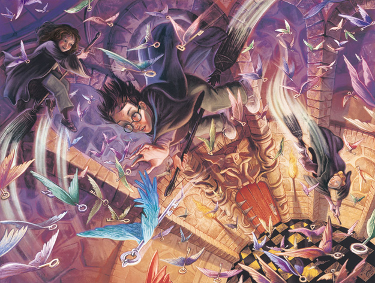

Data Potter
Es una aplicación Web dedicada a los fanaticos de la saga Harry Potter, En esta aplicación puedes consultar datos referentes a la saga y hacer busquedas especificas.
Front-end Developers
Front end Developer apasionada por la creación de interfaces , que lleguen a trascender en la vida de las personas y mejoren su entorno.
Es una aplicación Web dedicada a los fanaticos de la saga Harry Potter, En esta aplicación puedes consultar datos referentes a la saga y hacer busquedas especificas.

Es una libreria que te ayuda a identificar archivos Markdow, mostrandonos estadisticas de lonks rotos.
Esta red social esta enfocada a las personas que aman de viajar. El principal objetivo es conectar a las personas expertas y quines desean empezar con este estilo de vida.
Esta aplicación facilita la toma de comandas de un negocia que esta en crecimiento. Esta enfocada al área de servicio, como son meseros y el área de cocina.